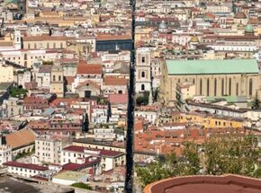
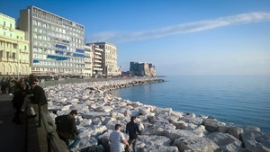

Benvenuti viaggiatori dal cuore avventuroso e amanti delle tradizioni! Preparatevi a tuffarvi nell’anima vibrante di Napoli, dove ogni vicolo racconta una leggenda, ogni piazza è un teatro a cielo aperto e la vita cittadina è un capolavoro che si anima con il passare delle ore.
Iniziamo dal cuore pulsante di Napoli, dove la storia si intreccia con la vita quotidiana. Passeggiate tra le strade di Spaccanapoli, lasciatevi incantare dalle melodie dei musicisti di strada e assaporate una sfogliatella calda mentre ammirate le antiche chiese e i palazzi storici. Non sorprendetevi se vi ritrovate coinvolti in una conversazione con i napoletani: qui ogni incontro è un’opportunità per una nuova amicizia!
Proseguendo verso il mare, il lungomare di Napoli si svela in tutto il suo splendore. Qui, il profumo del sale si fonde con quello del caffè appena tostato. Fermatevi in uno dei tanti caffè per un espresso perfetto, e lasciate che lo sguardo si perda tra le onde e il Vesuvio all’orizzonte. E se vedete qualcuno che parla da solo, non preoccupatevi: è solo un napoletano che esercita l’arte della “gesticulazione”!
Salendo verso il quartiere Vomero, raggiungete Castel Sant’Elmo e godetevi il panorama mozzafiato sulla città. Qui, tra i bastioni antichi, potreste incrociare gli innamorati che sussurrano promesse eternali e gli artisti che cercano di catturare la bellezza di Napoli su tela.